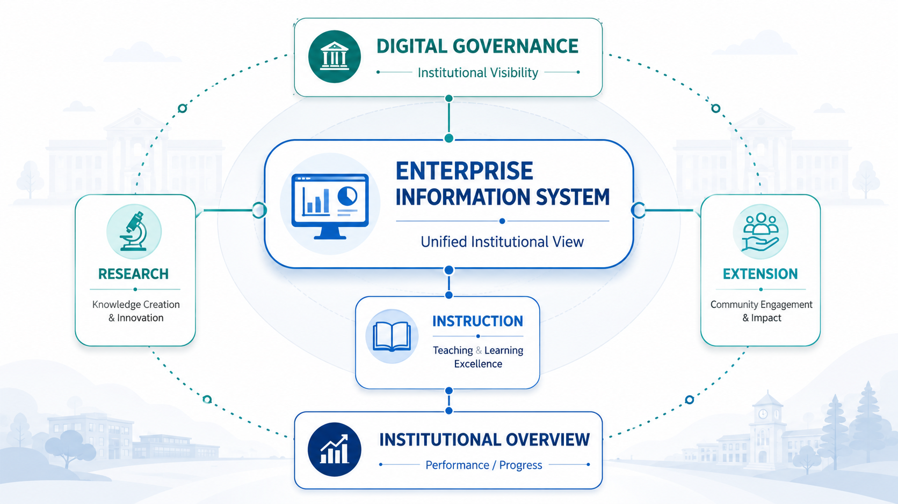
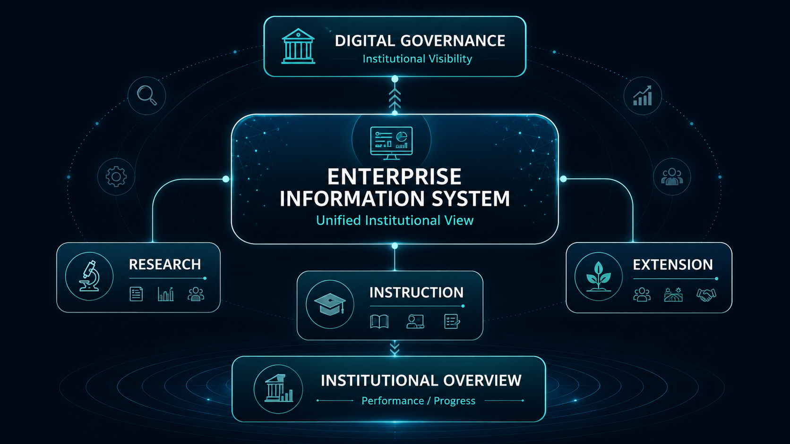
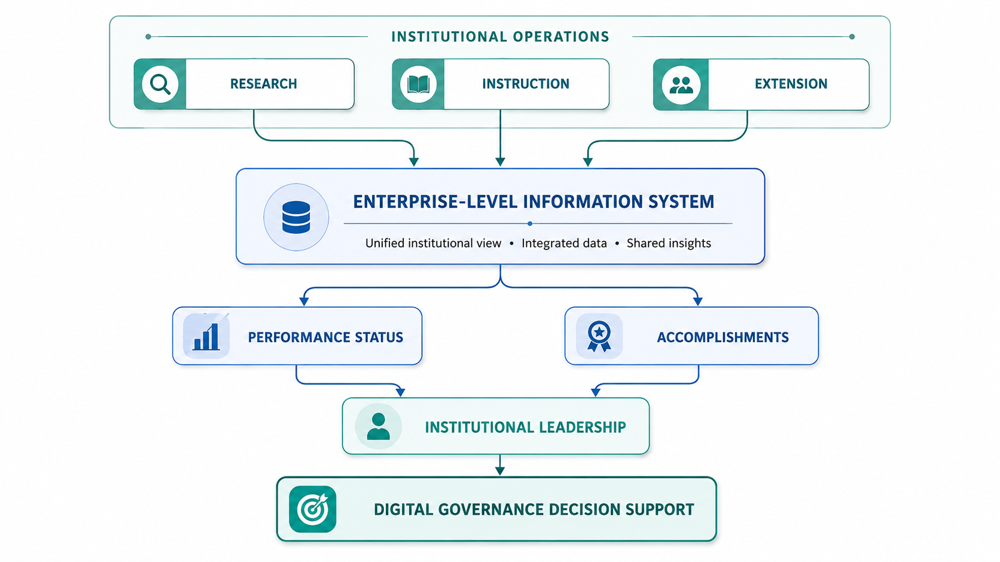
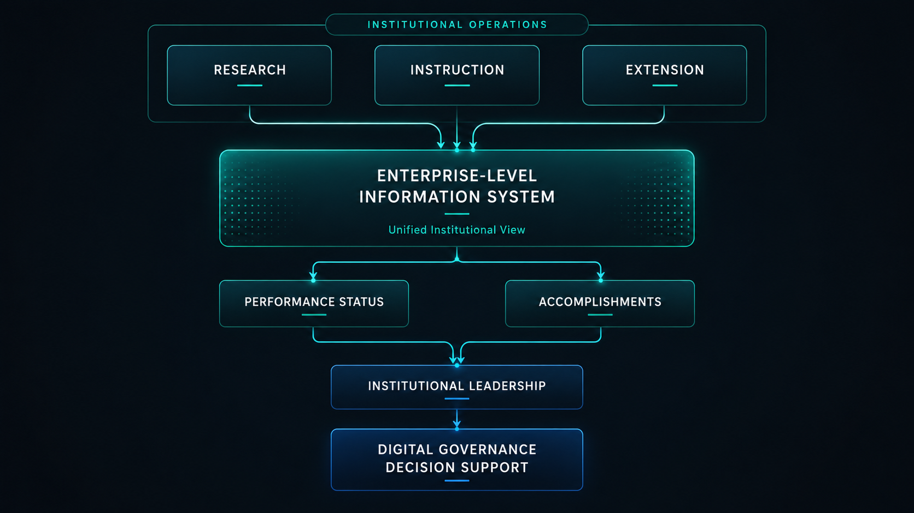
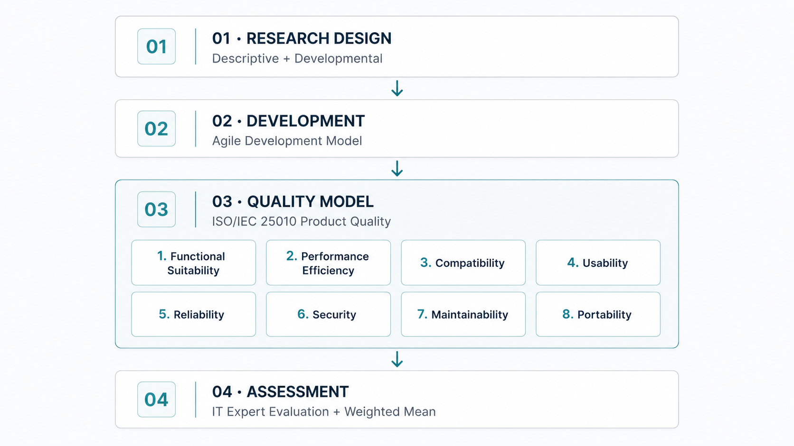
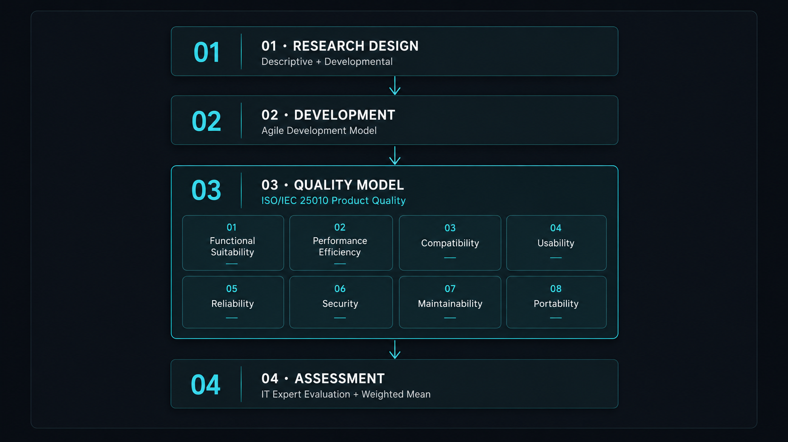

Overview
Research Overview
The research examined an enterprise-level information system designed to integrate Research, Instruction, and Extension functions across Philippine State Universities and Colleges (SUCs). The platform was intended to give institutional leaders a consolidated, real-time view of organizational performance and accomplishments while supporting broader digital-governance initiatives in higher education.


Problem Statement
Research Problem
Philippine SUCs operate across multiple institutional mandates. The study explored whether these core academic and operational functions could be integrated through a single enterprise-level information system rather than being viewed independently, enabling institutional leadership to obtain a more unified picture of performance and accomplishment.
Architecture & Framework
System / Research Model
The conceptual model links day-to-day institutional operations directly into decision support for digital governance.


Approach & Protocol
Methodology
Research Design
The study employed a descriptive-developmental research approach, combining system development with structured evaluation of the resulting software product.
Software Development Lifecycle
Development followed the Agile Development Model, allowing the application to progress through an iterative software-development lifecycle from initiation toward completion.


Assessment & Metrics
ISO/IEC 25010 Software Quality Evaluation
System product quality was formally evaluated against the eight product-quality characteristics defined by the ISO/IEC 25010 Software Engineering standard:
IT Expert Assessment
Results & Discussion
Key Findings & Policy Relevance
Evaluation by IT experts produced an overall weighted mean of 3.73, interpreted in the study as Excellent in terms of product quality. Based on this assessment, the researchers concluded that the developed system achieved a high level of software quality and recommended its operational use.
Beyond software evaluation, the research positioned the platform as a mechanism for improving institutional visibility over Research, Instruction, and Extension activities and as evidence that may support policies and guidelines for integrating digital technologies into higher education governance.
Role & Ownership
My Contribution
Co-author, affiliated with FEU Institute of Technology, Manila. Publication recorded in archived FEU institutional research files and Scopus records.
Authorship & Affiliation
Authors & Research Institutions
Co-Authors
Participating Academic Institutions
Reference & Indexing
Publication & Citation
Official bibliographic reference string as recorded in FEU repository:
Lagman, A. C., Ramirez, I. C. R., Esteban, A. P., Rivera, R. P. L., Santos, R. D., & Juliano, J. J. (2025). Development and Evaluation of an Enterpriselevel Information System for Digital Governance in Philippine SUCs Using Agile Software Methodology and ISO/IEC 25010 Software Quality Model. 2024 IEEE 16th HNICEM, 1–6.Verification
Verified Publication Destinations
IEEE Xplore
Primary IEEE digital library publication record.
Digital Object Identifier (DOI)
Direct DOI permanent article resolver: 10.1109/HNICEM64917.2024.11258693.
FEU Research Repository
Official FEU Tech repository paper record.
FEU Author Record
Institutional author index for Ian Cedric Ramirez.
FEU Academic Briefcase
Archived institutional academic profile.
Scopus Indexing
Scopus secondary document record: 105030150631.